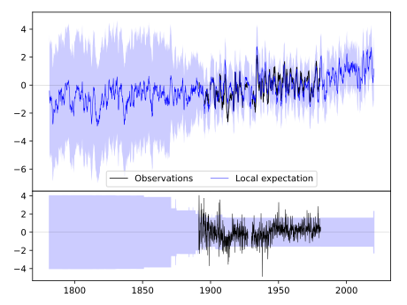
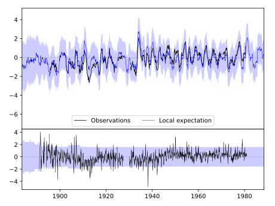
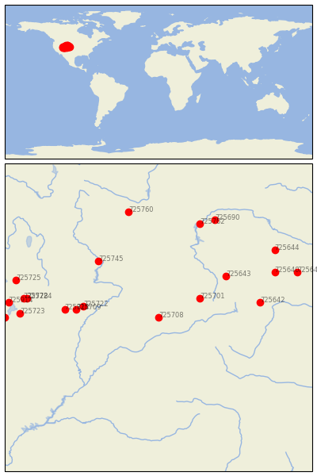

MEEKER [USA]


| Neighbour | Name | Country | Distance | Lon/Lat | Years |
|---|
| 725708 | MEEKER | USA | 2 | -107.9, 40.0 | 1891-1980 |
| 725701 | STEAMBOAT SPRINGS | USA | 108 | -106.8, 40.5 | 1891-2019 |
| 725722 | FT DUCHESNE | USA | 173 | -109.9, 40.3 | 1889-2019 |
| 725709 | MYTON | USA | 188 | -110.1, 40.2 | 1932-1980 |
| 725643 | FOXPARK | USA | 195 | -106.1, 41.1 | 1909-1970 |
| 725814 | DUCHESNE | USA | 213 | -110.4, 40.2 | 1893-2019 |
| 725745 | GREEN RIVER | USA | 214 | -109.5, 41.5 | 1895-2019 |
| 725642 | WATERDALE | USA | 233 | -105.2, 40.4 | 1902-1980 |
| 725762 | PATHFINDER DAM | USA | 292 | -106.8, 42.5 | 1900-1990 |
| 725640 | CHEYENNE WSFO AP | USA | 293 | -104.8, 41.2 | 1871-2020 |
| 725724 | HEBER | USA | 302 | -111.4, 40.5 | 1893-2019 |
| 725728 | SNAKE CREEK POWERHOU | USA | 310 | -111.5, 40.5 | 1893-2019 |
| 725690 | BATES CREEK #2 | USA | 315 | -106.4, 42.6 | 1893-2020 |
| 725723 | SPANISH FORK PWR HOU | USA | 315 | -111.6, 40.1 | 1893-2019 |
| 725760 | LANDER | USA | 318 | -108.7, 42.8 | 1892-2020 |
| 725644 | CHUGWATER | USA | 328 | -104.8, 41.8 | 1893-2019 |
| 725641 | PINE BLUFFS 5W | USA | 339 | -104.2, 41.2 | 1893-2019 |
| 725725 | MORGAN POWER & LIGHT | USA | 339 | -111.7, 41.0 | 1893-2019 |
| 725914 | UTAH LAKE LEHI | USA | 342 | -111.9, 40.4 | 1895-2019 |
| 725812 | ELBERTA------------- | USA--------- | 349 | -112.0, 40.0 | 1914-1992 |